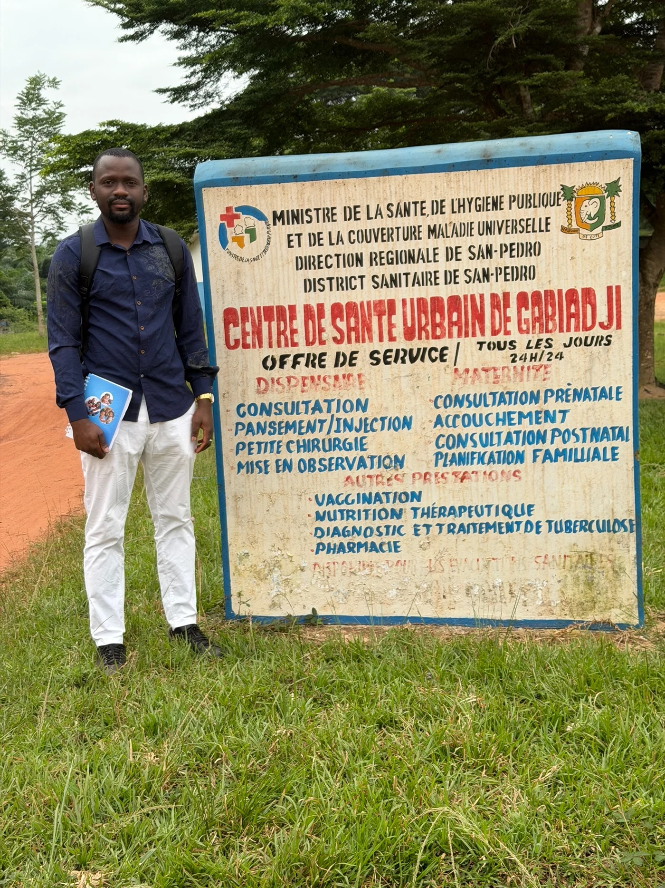
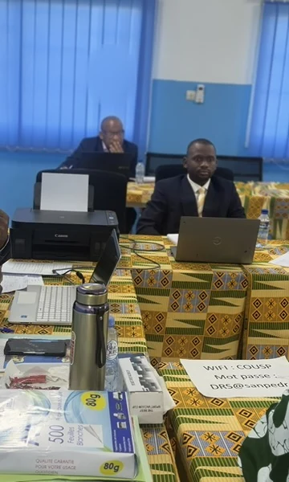
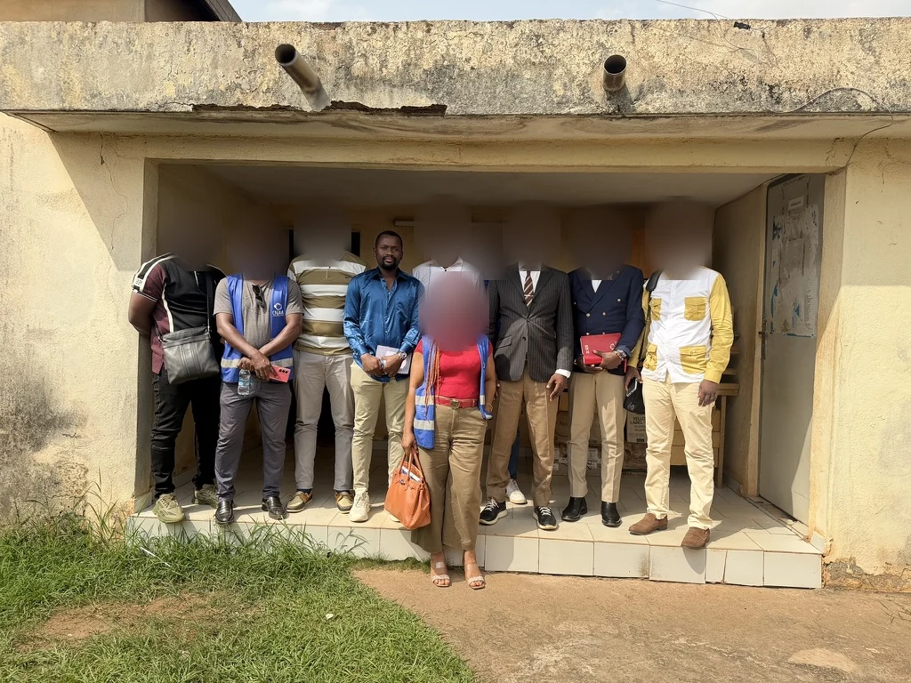

Médecine clinique
Consultation, évaluation clinique, prise en charge des urgences, surveillance des patients, orientation et continuité des soins.
San Pedro, Côte d’Ivoire · Mobilité régionale et internationale
Médecin | Santé au travail, santé publique & prévention
Médecin Conseil Régional à la CNAM, je maintiens une pratique clinique parallèle et développe un parcours centré sur le contrôle médical, la prévention des risques professionnels et la santé des populations.
À propos
Mon socle est médical. Après une pratique clinique en Guinée puis à San Pedro, mon parcours s’est élargi à la santé publique, au contrôle médical de l’assurance maladie et à la santé au travail. Depuis décembre 2025, j’exerce comme Médecin Conseil Régional à la CNAM dans la région de San Pedro.
Cette progression est renforcée par un Mastère Spécialisé en Médecine et Santé au Travail terminé en 2026, une formation EHS structurée et un nouveau Mastère en Sécurité Industrielle et Environnement en cours. L’objectif n’est pas d’additionner des titres, mais de relier médecine, prévention, conformité et terrain.
Domaines de compétence
Les compétences ci-dessous reposent sur l’expérience professionnelle, les formations structurantes et les certifications documentées. Elles ne sont pas présentées comme des niveaux d’expertise autoproclamés.
Consultation, évaluation clinique, prise en charge des urgences, surveillance des patients, orientation et continuité des soins.
Analyse des prestations de la CMU, vérification clinique, administrative et technique, non-conformités, actions correctives et reporting.
Surveillance de la santé des travailleurs, prévention des risques professionnels, ergonomie, risques chimiques et biologiques, SST.
Épidémiologie, prévention et dépistage, systèmes de santé, suivi-évaluation, gestion axée sur les résultats et gestion de projets.
Expérience professionnelle
CNAM · Centre de Coordination de San Pedro · Côte d’Ivoire
CNAM · Direction des Prestations · Abidjan
La Rosette SP · San Pedro
La Rosette SP · San Pedro
Clinique Médicale de la Minière · Conakry, Guinée
Programme national de lutte contre le VIH, le paludisme et les hépatites · Guinée
Stage pratique effectué alors étudiant en médecine.



Formation
La hiérarchie distingue les diplômes universitaires des certifications professionnelles et des formations courtes.
Université Gamal Abdel Nasser de Conakry · Guinée · 2022
TECH Global University · 1 800 h · 60 ECTS · Terminé le 24/09/2026
TECH
ESCAM · Côte d’Ivoire
Formations professionnelles & certifications sélectionnées
Les éléments affichés ici sont ceux qui renforcent directement le positionnement. Les formations proches sont assemblées ; les formations secondaires restent dans la vue détaillée.
Un socle professionnel complémentaire au Mastère universitaire.
Deux formations structurées réunies dans un même axe EHS.
Une certification professionnelle appuyée par des formations méthodologiques reconnues.
Une certification à examen, avec progression du niveau national au niveau régional.
Formations OMS/OpenWHO regroupées selon leur finalité opérationnelle.
Les formations courtes répétitives sont regroupées sous les programmes les plus substantiels.
Une vue détaillée présente les autres formations documentées, leur niveau et les regroupements retenus.
Voir les certifications détaillées →Travaux & initiatives
Trois éléments qui complètent le parcours sans transformer le portfolio en inventaire.
Central African Journal of Public Health · 8(5) · 189–197 · Ibrahima Doukoure, co-auteur.
DOI: 10.11648/j.cajph.20220805.11 ↗Projet de santé à domicile développé à San Pedro autour des consultations, soins infirmiers, dépistage, prélèvements, téléconsultation et coordination du parcours de soins. Présenté ici comme une initiative entrepreneuriale, sans revendication de volume, chiffre d’affaires ou impact non documenté.
Président depuis 2020 ; coordination de 400 étudiants en médecine pour des actions académiques, sociales et de promotion de la santé.
CV
Choisissez le CV qui correspond au contexte de recrutement.
Systèmes de santé, CMU, épidémiologie, programmes, suivi-évaluation.
Télécharger le PDFSurveillance médicale, prévention, risques professionnels et pratique clinique.
Télécharger le PDFEHS, SST, sécurité industrielle, conformité et prévention des risques.
Télécharger le PDFContact
Médecine, santé au travail, santé publique, contrôle médical, prévention HSE/QHSE et projets santé.